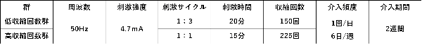
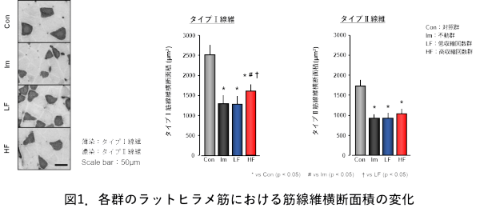
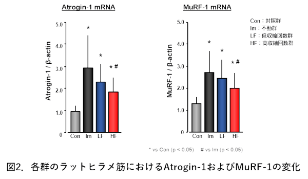
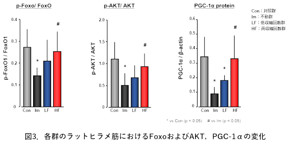

廃用性筋萎縮は日常生活動作の制限因子となり，疾患罹患率や死亡率の増悪に直結することから，その進行を効果的に抑制する治療戦略の開発が喫緊の課題となっています．廃用性筋萎縮の進行メカニズムについて，Atrogin-1やMuRF-1といった筋特異的ユビキチンリガーゼの発現亢進が関わり，AKTの脱リン酸化によるFoxOの核内発現増加とPGC-1αの発現低下がFoxOの転写活性を亢進させるとされています．骨格筋電気刺激（EMS）による筋収縮運動は廃用性筋萎縮進行抑制に有効とされていますが，分子動態への影響は明らかでなく，効果的な刺激条件も不明のままでした．
EMSを活用した筋収縮運動を高頻度に実施すると筋構成タンパク質の分解亢進経路の活性化が抑えられ，廃用性筋萎縮の進行が抑制されることが明らかとなりました．
＜方法＞
実験動物：8週齢Wistar系雄性ラットを4群に分類
1．対照群：無処置で2週間通常飼育
2．不動群：両側足関節を最大底屈位でギプス不動化
3．低収縮回数群：不動過程でEMS，1：3刺激サイクル，20分間
4．高収縮回数群：不動過程でEMS，1：1刺激サイクル，15分間
検索方法：実験終了後，両側ヒラメ筋を採取．右側はATPase染色，タイプI・II線維の筋線維横断面積計測．左側はAtrogin-1，MuRF-1のmRNA発現量，FoxO，AKT，PGC-1αのタンパク質発現量測定．

＜結果＞
筋線維横断面積はいずれのタイプでも不動群，低収縮回数群，高収縮回数群で有意に減少しました．タイプI線維でのみ高収縮回数群が不動群よりも有意に増加していました．Atrogin-1とMuRF-1のmRNA発現量は3群で有意に増加しましたが，高収縮回数群が不動群よりも有意に低下していました．リン酸化FoxO，リン酸化AKT，PGC-1αのタンパク質発現量は不動群で有意に減少し，高収縮回数群は不動群よりも有意に増加しており，対照群との有意差を認めませんでした．高収縮回数群のみ，AKTのリン酸化を介したFoxOの核内発現抑制とPGC-1αの発現を介したFoxOの転写活性抑制が認められました．



EMSによる筋収縮運動は廃用性筋萎縮進行抑制に効果的であり，そのメカニズムにはAKT/PGC-1α/FoxO pathwayの動態が関与していることが明らかになりました．収縮頻度が効果に影響を与えるため，廃用性筋萎縮に対するEMSの最適条件として留意すべきことが示唆されました．